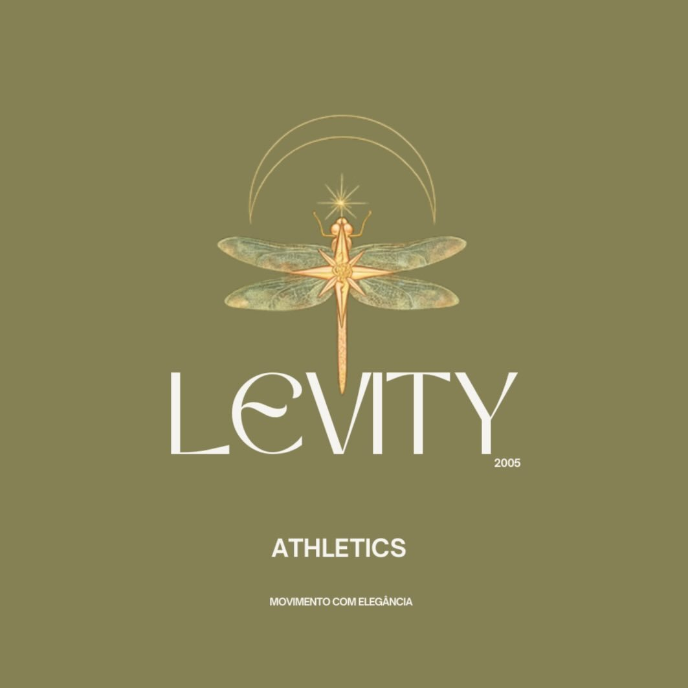

Três casos reais. Números reais. O que estava escondido na planilha — e o dinheiro que isso movimentou.
Case 01 · Varejo de moda · Palmas/TO
R$ 280 mil/ano vazando — e a dona não sabia.
O sistema mostrava venda, mas não mostrava ausência. 93,82% da base estava inativa e isso não aparecia em nenhum relatório. Transformamos a planilha de movimentação em uma lista pronta de clientes pra reativar.
1.200
clientes na base
1.126
não compravam mais (93,82%)
R$ 280 mil
saindo da conta por ano, em silêncio
238
clientes prontos pra reativar
✦Resultado: ROI projetado de R$ 56 mil em uma semana de campanha de reativação — usando dados que já existiam, mas ninguém lia.
Case 02 · Loja virtual de moda fitness

Do zero a um sistema completo — com R$ 0 de infraestrutura.
Sem gestão, sem visão, sem sistema, sem controle. Estruturamos a operação inteira: uma vitrine digital que dispara pedido automático no WhatsApp e um sistema de gestão sob medida — tudo rodando sem custo de servidor.
R$ 0
de custo de infraestrutura — sistema completo rodando sobre Google
Vitrine
catálogo com pedido automático no WhatsApp
Gestão
sistema sob medida pra controlar a operação
✦Resultado: uma loja que operava no escuro passou a ter vitrine + gestão funcionando — sem gastar com plataforma, mensalidade ou servidor.
Case 03 · Studio de beleza · Cílios & Sobrancelhas
Faturava bem e fechava o mês no vermelho — sem saber.
Estúdio com cadeiras alugadas, três profissionais e dados soltos em papel e cabeça. Receita aparecia; lucro real, não. Construímos o sistema de gestão inteiro: a equipe lança o atendimento do próprio celular e a dona abre um painel que mostra o lucro líquido de verdade, a meta do mês e o retorno de cada real investido em tráfego.
R$ 0
de infraestrutura — roda sobre o Google
Tempo real
lucro líquido e meta, mês a mês
2 perfis
dona vê o financeiro, equipe só lança
Em produção
equipe usando todo dia, do celular
✦Resultado: o mês "bom" que fechava no prejuízo deixou de ser surpresa. Lucro líquido real, ROI do tráfego e ranking por cadeira num painel só — sem mensalidade de sistema.